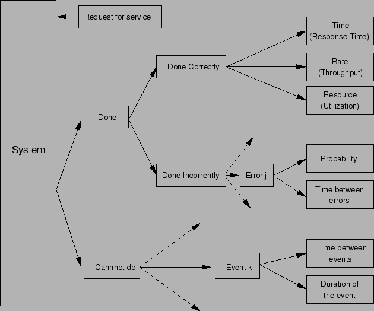

Next: ตัววัดประสิทธิภาพของระบบที่คงทนต่อความเสียหาย
Up: พื้นฐานระบบที่คงทนต่อความเสียหาย
Previous: หัวข้อสำคัญในครั้งก่อน
Contents
Index
ในการประเมินประสิทธิภาพของระบบคอมพิวเตอร์สามารถเกิดผลลัพธ์ของการทำงานได้สามลักษณะที่สามารถแจกแจงได้ดังต่อไปนี้
- ระบบสามารถบริการได้อย่างถูกต้อง
- ระบบสามารถบริการได้อย่างไม่ถูกต้อง หรือ
- ระบบไม่สามารถบริการได้
ในกรณีที่ระบบสามารถตอบสนองได้อย่างถูกต้อง ตัววัดประสิทธิภาพได้แก่ เวลาตอบสนอง, อัตราการทำงาน, และ ภาระงานของเครื่องบริการ ซึ่งได้กล่าวในรายละเอียดมาในบทก่อนหน้า แสดงในรูป 9.1
ในกรณีที่ระบบทำงานผิดพลาดหรือไม่สามารถทำงานได้ ตัววัดประสิทธิภาพจะอยู่ในรูปของความน่าจะเป็นที่เกิดเหตุการณ์หนึ่งๆ ระบบคอมพิวเตอร์ที่เกี่ยวข้องกับความน่าจะเป็นลักษณะดังกล่าว คือ ระบบคอมพิวเตอร์ที่คงทนต่อความเสียหาย ในบทนี้จะกล่าวถึงพื้นฐานของระบบคอมพิวเตอร์ที่ทนต่อความเสียหาย และนิยามตัววัดประสิทธิภาพต่างๆ ก่อนที่จะกล่าวถึงวิธีการวิเคราะห์ในบทต่อไป
Figure 9.1:
การแจกแจงบริการของระบบ
|

|
ระบบที่คงทนต่อความเสียหาย (Fault-Tolerant System) คือระบบคอมพิวเตอร์ที่ยังสามารถทำงานได้อย่างถูกต้องตามฟังก์ชั่น ในขณะที่เกิดความเสียหายทางฮารด์แวร์ หรือความผิดพลาดทางซอฟต์แวร์ ตัวอย่างเช่น ระบบซอฟต์แวร์ที่คงทนต่อการเสียหาย สามารถทำงานได้อย่างถูกต้อง ในขณะที่มี Bug ในซอฟต์แวร์นั้น เช่นเดียวกัน ในขณะที่เกิดความเสียหายทางฮารด์แวร์ ระบบฮารด์แวร์ที่คงทนต่อความเสียหายยังคงทำงานให้สำเร็จตามงานได้ตามที่ออกแบบมา
Vara Varavithya
2002-03-09